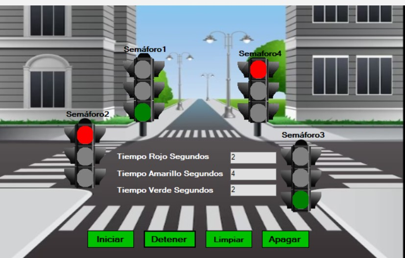
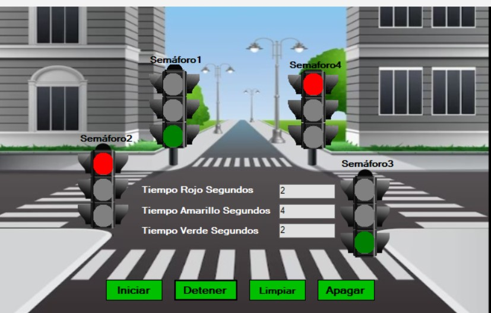
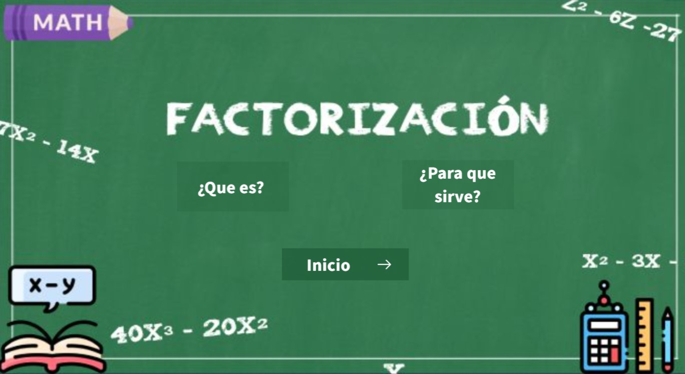

Proyectos
Fisiolaf

Esta calculadora, desarrollada en C# con múltiples ventanas, está diseñada para facilitar la resolución de problemas comunes en física. Su objetivo principal es simplificar el cálculo de fórmulas físicas básicas y avanzadas, permitiendo a estudiantes y profesionales obtener resultados precisos de manera rápida y eficiente. Su interfaz intuitiva está dividida en diferentes secciones, cada una especializada en un área de la física, lo que hace que la navegación y el uso sean sencillos para cualquier usuario que busque resolver problemas específicos.
Código Fuente Ver CódigoSemáforos
 

Esta simulación, desarrollada en C#, representa el funcionamiento de un cruce de calle con cuatro semáforos controlados de manera sincronizada. El objetivo principal del programa es recrear el comportamiento real de los semáforos en un cruce, asegurando un flujo de tráfico eficiente y seguro para vehículos y peatones. Esta simulación es ideal para comprender el funcionamiento básico de un sistema de control de tráfico y cómo los semáforos trabajan en conjunto para evitar colisiones en cruces. La visualización de los cambios de semáforo ayuda a analizar el comportamiento del flujo de vehículos y peatones en diferentes situaciones de tráfico.
Código Fuente Ver códigoFactorización
Esta herramienta educativa fue diseñada con el objetivo de ayudar a los estudiantes a identificar y comprender los diferentes tipos de factorización en álgebra. Esta guía interactiva permite a los alumnos aprender a distinguir entre ejercicios de factorización, como trinomios cuadrados perfectos, diferencia de cuadrados, y cubo perfecto, entre otros. La guía está organizada en secciones que explican los métodos de factorización más comunes, proporcionando ejemplos y pasos detallados para que los estudiantes puedan practicar y desarrollar sus habilidades. Además, incluye consejos y estrategias para identificar rápidamente el tipo de factorización que corresponde a cada ejercicio.
La Empresa Multinacional El Manantial S.A.
Este es un proyecto dónde múltiples oficinas y departamentos están interconectados a través de routers y switches. Cada subred representa un área distinta, como oficinas administrativas, bodegas y salas de ventas, con asignaciones de IP diferentes, lo que sugiere una división lógica en la infraestructura de red para facilitar la gestión del tráfico y la seguridad. Se observa la utilización de conexiones Ethernet y enlaces seriales entre los routers principales para interconectar las distintas áreas, lo que permite la comunicación eficiente entre diferentes segmentos de la organización.